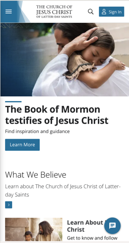

Visual Hierarchy
Walt Disney World
disneyworld.comThe Walt Disney Page effectively uses the design principal of visual hierarchy. The most important part of the page is booking a vacation. The ability to plan a trip is the largest and most obvious part of the page. Other details have smaller text or blend in more with there surroundings which makes them less visible.
Hick's Law
Church of Jesus Christ of Latter-Day Saints
churchofjesuschrist.com The Church of Jesus Christ of Latter-Day Saints site is a good example of Hick's law because it does not over crowd the page. There is minimal information and it only puts what is important on the page that it would like whoever is visiting to see.
White Space and Clean Design
Google uses white space very effectively. The page is mostly white, however it effectively spaces all of the information out so that it is easy to scan through all of the articles and quickly find what you are looking for.